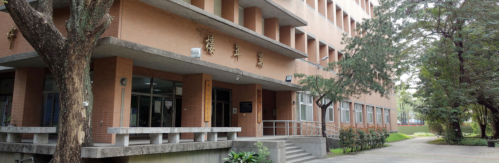

|  |
|---|
語言中心 |
歷史 |
|
發展特色 |
|
樓層簡介 |
|
地下一樓 特藏室
地上一樓 文學院圖書室
地上二樓 語言教室
地上三樓 辦公室(推廣班業務)、主任辦公室、教師休息室、語言教室
地上四樓 萬年廳、語言教室、多媒體教室
地上五樓 辦公室(英外語課程業務)、數位學習坊、英語諮詢室、同步翻譯教室
|
回到首頁 |
| ©National Chung Hsing University |
| 國立中興大學 |
| 402 台中市南區興大路145號 |
| Tel : 04-22873181 |